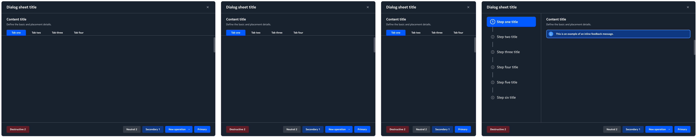

Digital Operations Center
Turning a design-system migration into a chance to make a fragmented telecom platform behave like one product.
01 · Context
DOC brought several products into one platform, but each one still behaved like its own product.
Digital Operations Center is Nokia's cloud-native platform for telecom operators to design, launch and manage services, from mobile subscriptions to 5G network slicing. It has three modules that work as a loop:
Nokia OrchestrationWhat service should I create?
Nokia AssuranceIs it working, and if not, what should I do?
I joined to help migrate DOC to Nokia's new design language.
Different products inside one platform, each with its own patterns.
02 · The real problem
The same action behaved differently in each module, so users had to re-learn the platform every time they switched context.
Screen layout
Panels and split screens were arranged differently in every product.
Details opened in a side panel in one product, a split screen in another and a full page in a third, so users never knew where information would appear.
Navigation
Each product had its own way of getting around.
Some used icon menus, others text menus or several levels of tabs. Moving between products meant learning a new map each time.
Dialogs
The same kind of dialog looked and behaved differently from product to product.
Confirmations, forms and warnings had different layouts, button orders and wording, so users had to read every dialog carefully instead of recognising it.
Data grid actions
Working with data grids followed different rules in every product.
Row selection, bulk actions, filtering, sorting and row-level menus sat in different places and behaved differently, even though data grids are where operators spend most of their time.
Topologies
Network diagrams were drawn and controlled differently.
Zoom, layout, node styles and controls varied between products, which made it hard to read and compare the same network across modules.
Each product worked on its own, but the platform didn't feel like one product. The user had to be the glue.
03 · Research
I combined what users told us with a structured audit of the platform and a close look at how a leading enterprise platform solves the same problems.
Competitive audit of leading enterprise service-management platforms
Listening to users
I gathered pain points from user research, surveys, feedback channels and users' improvement suggestions, then checked them against an interaction audit across all five products. The audit turned scattered complaints into a concrete list of inconsistent patterns.
Learning from enterprise platforms
When some telecom customers moved to a competitor's enterprise service-management platform, I spent several months auditing it to understand why. I compared how it handled service-request workflows with DOC's and synthesised customer review feedback.
Users stopped trusting the platform to behave the same way.
The same action worked differently in each product, so users slowed down, double-checked and re-learned. This became the five problems above.
Simple and consistent beat feature-rich.
The competitor showed less on each screen and behaved the same everywhere. Lower information density meant lower cognitive load, and customers valued that predictability over extra features.
Configuration beats customisation.
DOC offered few configuration options, so customers asked for custom work to fit their needs, and every change needed a specialist. The competitor let admins configure workflows themselves. That lesson shaped DOC's redesign of work queues and tasks.
04 · The key decision
Fix behaviour during the migration, not after.
It extended the migration's scope, and every product team had its own priorities.
Every screen was being rebuilt with new components anyway. Fixing behaviour now cost a little more effort; fixing it later meant reworking the same screens twice, and users would have lived with five different patterns for another release cycle.
More effort up front, and an adaptation period for users.
Why this matters for platforms: on a shared platform, consistency is cheapest to build in when the foundation is being rebuilt, not patched on later.
05 · Unified patterns
One rule for each of the five problems. With my team, I then redesigned every product in Orchestration, Assurance and Unified Inventory to follow them.
Screen layout
Details always open in a panel on the right, next to the list or canvas, so users keep their place. Full pages are kept for creating or editing complex objects.
Navigation
Every product uses the same left icon rail to move between areas, with the page title or breadcrumb in the same bar at the top, so users always know where they are and how to get back.
Dialogs
Every dialog follows one structure: title and close at the top, a content title with a short description, tabs or steps for longer tasks, and a fixed footer. Destructive actions sit alone on the left; the other actions sit on the right, with the primary action last.

Data grid actions
Checkboxes select rows for bulk actions. Search, status filters and view options sit in the same toolbar above every grid, row actions live in a ⋮ menu at the end of each row, and selecting a row opens its details in the right-hand panel.
Topologies
One set of node styles and status colours across products. Filters, the list, topology and map view switcher, and the zoom controls always sit in the same places, and selecting a node opens its details in the same right-hand panel as Pattern 01.
06 · Themes & migration
One screen, three generations of design system.
In 2023 Nokia introduced FreeForm, a design system to give every Nokia product one look. I joined to rebuild DOC's screens with FreeForm components, and used the migration to widen the scope: instead of only restyling each product, I unified how the whole platform behaves. Because the rules and components were set up once, the platform was ready for the next change.
Separate products, legacy components
Each product was built with its own legacy components and its own header, layout and patterns.
One design system, light and dark themes
The screens were rebuilt with FreeForm components and the unified patterns, and we introduced light and dark themes.
Ready for the next design system
In 2026 Nokia launched Connect, a design system built for AI-assisted design and development. The move to Connect is planned for next year. Because DOC already follows one set of patterns, it can switch by changing the look and components, without redesigning the platform again.
07 · Validation & impact
We worked in agile sprints: each redesigned flow was tested and refined before development, and once screens were built I checked them against the design decisions.
Other Nokia teams reused the patterns, and the planned move to Connect needs a new look, not a new experience.
08 · Making it stick
Once every screen was developed, I documented all the rules and patterns, so new screens and features, even those designed by other designers, follow the same logic. I also guided two interns, who helped with Figma prototypes and smaller features.
The patterns live in one place: documented in Figma, linked from Confluence and built as components in Storybook. New features follow the rules by default, and changes go through a UX review before they reach the documentation, so the rules stay current as the design system evolves.
09 · Outcome & reflection
The unified rules shipped across DOC, and other Nokia teams reused some of the patterns.
At first, customers pushed back. Nobody likes a big UI change in a tool they use every day. When we introduced the new screens gradually, users had time to adapt, and they came to like the new designs.